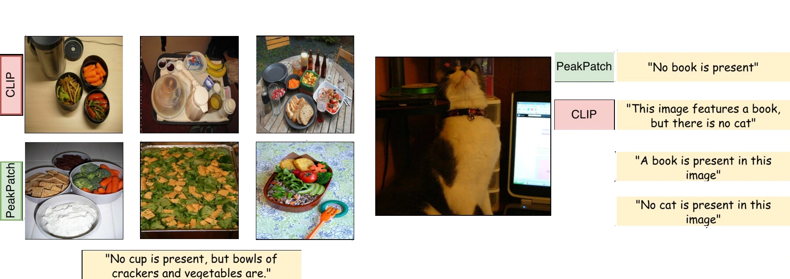
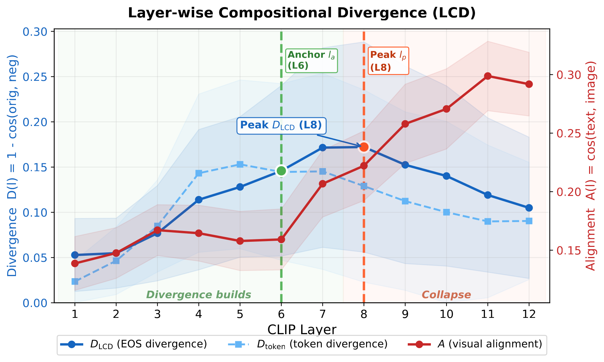
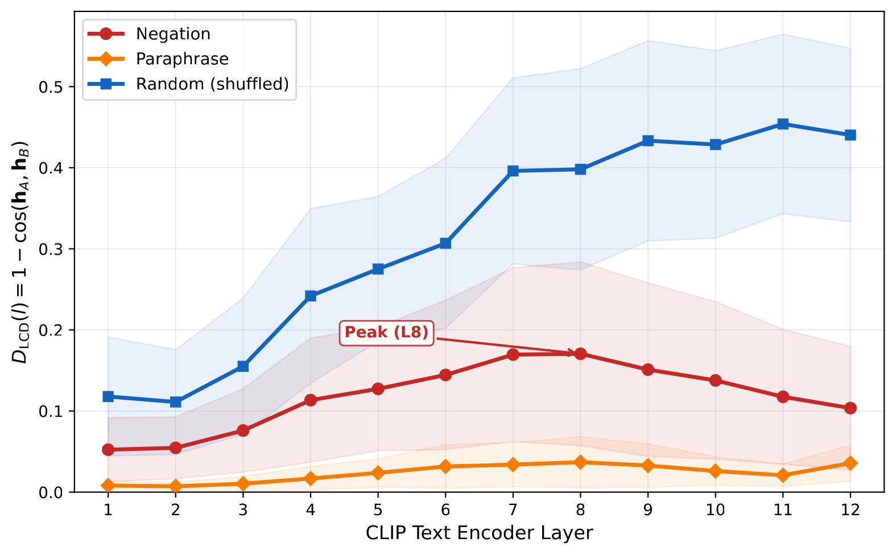
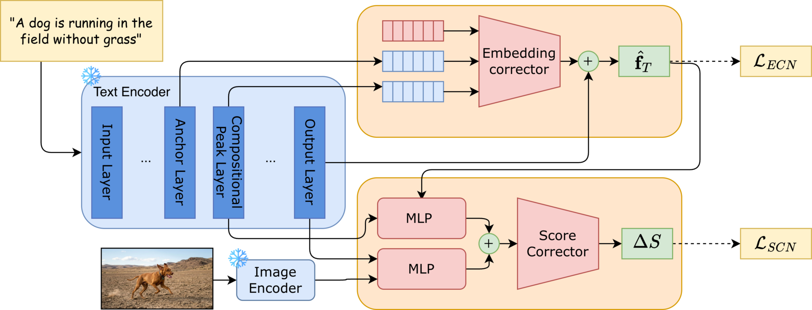
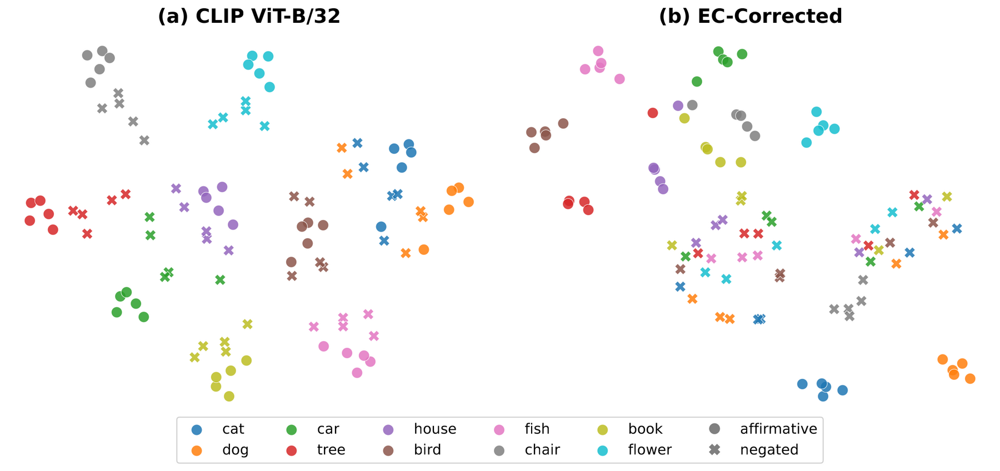
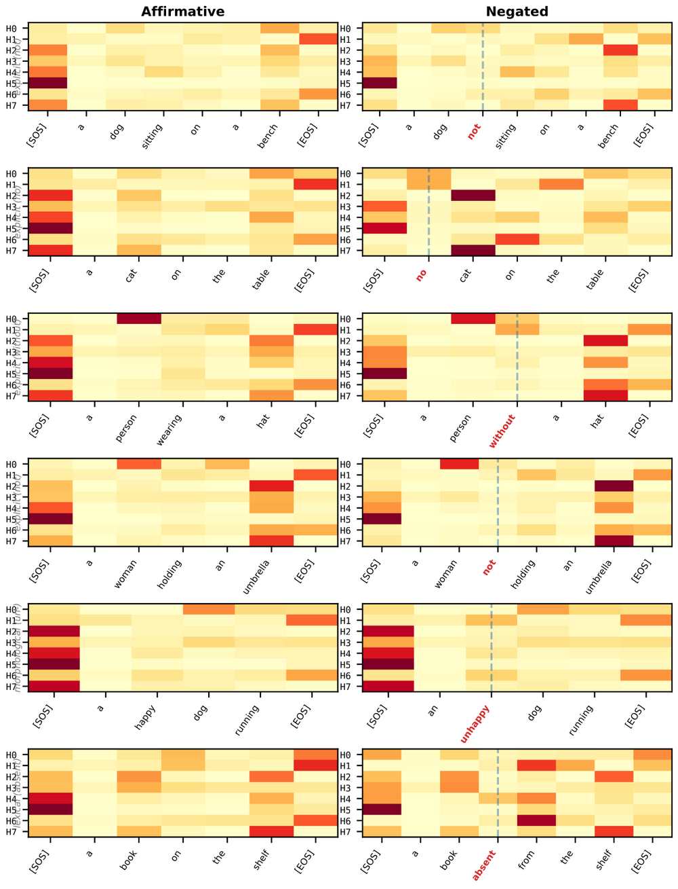

Purdue University

Contrastive vision-language models such as CLIP map semantically opposite phrases (e.g., “a dog” vs. “not a dog”) to nearly identical embeddings, rendering them insensitive to negation. We attribute this failure to a phenomenon we call Representational Collapse: by tracking compositional divergence and visual alignment across the CLIP text encoder, we show that middle layers build compositional syntax, but the final layers collapse this structure as visual alignment rises, producing a syntax-blind final representation.
To recover the lost negation signal without altering pretrained weights, we propose PeakPatch, a lightweight post-hoc correction system that intercepts the encoder at its compositional peak while keeping CLIP fully frozen. An Embedding Correction Network (ECN) uses cross-attention to extract a negation-specific signal from the peak layer, anchored to a stable baseline, and predicts a deviation vector that re-injects the lost syntax into the final-layer embedding space. A complementary Score Correction Network (SCN) predicts bounded scalar score offsets for discriminative tasks. Both modules are trained jointly end-to-end while all CLIP parameters remain frozen, adding only 5.2M parameters (3.5% of the backbone) and preserving the standard cosine similarity interface.
On NegBench, PeakPatch achieves 74.3% on COCO MCQ (+35.1 over CLIP, +17.8 over the best encoder fine-tuning method) and 65.5% on VOC MCQ, while outperforming all fine-tuning baselines on fully out-of-distribution negation retrieval despite training only 3.5% of the parameters. The corrected embeddings also transfer to text-to-image generation (+18.4 negation score) and generalize across ViT-B/32, ViT-L/14, and SigLIP backbones.
We probe the frozen CLIP text encoder layer by layer with two complementary metrics.
Layer-wise Compositional Divergence
D(ℓ) = 1 − cos(fℓ(T⁺), fℓ(T⁻))
measures how well layer ℓ separates a caption from its negation.
Visual alignment A(ℓ) = cos(fℓ(T), fI)
measures how strongly contrastive pressure has already reshaped that layer toward the image.
The two curves tell a clear story: negation separability is built in the middle layers and then destroyed in the last ones, exactly as visual alignment takes over. CLIP does encode negation — it just discards it before the output.


Tap the encoder where negation still exists; patch what the last layers threw away. Every CLIP weight stays frozen.

| Method | COCO | VOC | ||||||
|---|---|---|---|---|---|---|---|---|
| Aff | Neg | Hyb | Avg | Aff | Neg | Hyb | Avg | |
| CLIP | 70.0 | 6.6 | 38.4 | 39.2 | 80.9 | 3.0 | 58.0 | 37.9 |
| Encoder fine-tuning | ||||||||
| NegCLIP ICLR'23 | 49.2 | 13.9 | 16.3 | 26.8 | 70.5 | 4.6 | 42.3 | 30.2 |
| CoN-CLIP WACV'25 | 15.6 | 32.9 | 25.3 | 24.4 | 24.8 | 23.2 | 56.7 | 38.2 |
| CLIP + NF CVPR'25 | 73.1 | 33.2 | 54.7 | 54.2 | 85.0 | 31.7 | 79.5 | 60.1 |
| NegCLIP + NF CVPR'25 | 81.0 | 25.9 | 60.1 | 56.5 | 81.0 | 21.1 | 83.7 | 58.2 |
| Post-hoc correction (frozen backbone) | ||||||||
| DCSM† ICCV'25 | 71.2 | 6.6 | 68.0 | 48.6 | 68.5 | 5.4 | 73.1 | 49.0 |
| PeakPatch | 98.1 | 63.2 | 60.7 | 74.3 | 99.7 | 57.9 | 62.2 | 65.5 |
| Method | Type | #P | COCO | MSR-VTT | ||
|---|---|---|---|---|---|---|
| R@1 | R@5 | R@1 | R@5 | |||
| CLIP | — | — | 25.0 | 47.9 | 23.8 | 45.9 |
| Trained on COCO (COCO = in-domain) | ||||||
| NegCLIP ICLR'23 | FT | 151M | 41.0 | 68.6 | 28.0 | 50.2 |
| NegationCLIP ICCV'25 | FT | 151M | 38.6 | 65.8 | 29.3 | 53.8 |
| NegCLIP + NF CVPR'25 | FT | 151M | 41.3 | 69.0 | 29.2 | 51.5 |
| DCSM† ICCV'25 | PH | 3.0M | 10.6 | 28.6 | 19.4 | 41.2 |
| PeakPatch | PH | 5.2M | 37.1 | 64.3 | 26.2 | 49.0 |
| Trained without COCO (fully out-of-distribution) | ||||||
| CoN-CLIP WACV'25 | FT | 151M | 25.7 | 50.1 | 23.3 | 45.4 |
| CLIP + NF CVPR'25 | FT | 151M | 30.4 | 55.0 | 28.4 | 51.6 |
| PeakPatch | PH | 5.2M | 31.4 | 56.9 | 29.1 | 53.7 |
| Method | Aff | Neg | Comb |
|---|---|---|---|
| CLIP | 97.4 | 29.2 | 28.3 |
| NegCLIP | 98.8 | 24.5 | 23.7 |
| NegationCLIP | 98.8 | 45.2 | 44.5 |
| PeakPatch (ECN only) | 98.1 | 47.6 | 45.8 |
| Architecture | Base | + PeakPatch | ||
|---|---|---|---|---|
| COCO | VOC | COCO | VOC | |
| CLIP ViT-B/32 | 39.2 | 37.9 | 74.3 | 65.5 |
| CLIP ViT-L/14 | 40.6 | 38.0 | 63.8 | 52.5 |
| SigLIP ViT-B/16 | 28.9 | 30.8 | 66.4 | 55.3 |
| Variant | MCQ | Retrieval | |
|---|---|---|---|
| Neg | Avg | R@5 | |
| CLIP (baseline) | 6.6 | 39.2 | 47.9 |
| ECN only | 16.5 | 51.2 | 58.2 |
| SCN only | 67.3 | 71.6 | 48.1 |
| w/o anchor layer la | 61.7 | 68.7 | 60.5 |
| Detached SCN | 57.3 | 67.1 | 64.8 |
| PeakPatch (joint) | 63.2 | 74.3 | 64.3 |
Because PeakPatch corrects every query without gating, it must not damage ordinary retrieval. On standard affirmative MSCOCO 5K and Flickr30K 1K text-to-image retrieval, the ECN-corrected embeddings slightly improve over frozen CLIP: R@1 rises 29.9 → 32.1 and 57.9 → 60.4 respectively.


@inproceedings{lu2026peakpatch,
title = {What CLIP Knows but Cannot Say: Recovering Negation
from Frozen Intermediate Features},
author = {Lu, Chen-Yi and Chen, Yueh-Shao and Chaterji, Somali},
booktitle = {European Conference on Computer Vision (ECCV)},
year = {2026},
eprint = {2607.23271},
archivePrefix = {arXiv},
primaryClass = {cs.CV}
}